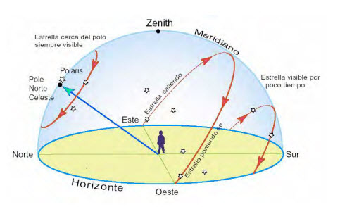
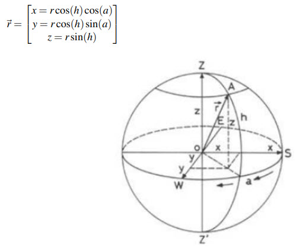
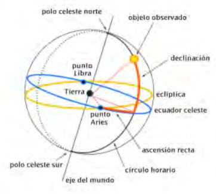

<!DOCTYPE html>
<html lang="es"></html>
<head>
    <meta charset="utf-8" />
    <meta name="viewport" content="width=device-width, initial-scale=1.0">
    <title>Astronomía celeste</title>
    <style>
        .body{
            background-color: beige;
        }
        .contendor{
            z-index: 1;
            background-color:aquamarine;
            padding: 35px;
        }
    </style>
    
    <link rel="stylesheet" href="EstiloAc.css">
</head>
<body>
    <div class="contendor">
        <h1><p style="text-align: center;">Astronomía celeste</p></h1>
        <a href="index.html">Volver al inicio</a>
    </div>
    <div class="Información">
        <h2 class="Texto">
            Astronomía esférica
            <p style="font-size: medium;">Polos celestes:<p style="font-size: medium; font-weight: normal;">Posciciones aparentes del Sur y el Norte</p></p>
            <p style="font-size: medium;">Cenit:<p style="font-size: medium; font-weight: normal;">Se encuentra encima de nosotros</p></p>
            <p style="font-size: medium;">Nadir:<p style="font-size: medium; font-weight: normal;">Se encuentra debajo de nosotros</p></p>
            <p style="font-size: medium;">Horizonte verdadero:<p style="font-size: medium; font-weight: normal;">Circulo perpendicular al Norte y Sur verdaderos del planeta</p></p>
            <p style="font-size: medium;">Ecuador celeste:<p style="font-size: medium; font-weight: normal;">Linea imaginaria que divide a la esfera celeste en los aparentes norte y sur</p></p>
            <p style="font-size: medium;">Paralelos celeste:<p style="font-size: medium; font-weight: normal;">Circulos de menor tamaño que estan en paralelo con el ecuador celeste</p></p>
            <p style="font-size: medium;">Meridiano celeste:<p style="font-size: medium; font-weight: normal;">Semicirculo perpendicular al ecuador celeste que se encuentra desde el polo Sur y Norte</p></p>
            <p style="font-size: medium;">Ejemplo</p>
            <br>
            Coordenadas horizontales<br>
            <div class="Purebacir" style="font-size: medium; font-weight: normal;"> De Norte a Sur: o De Este a Oeste:
                <div class="circulo" id="circulo_x_y_z" style="height: 100px; width: 100px;"></div>                            
            </div>
            <p style="font-size: medium;">Triangulo:</p>
            <div class="hipotenusag" id="hgirar"></div>

            <div class="apuntary" id="apy"></div>
            <div class="apuntarx" id="apx"></div> 
            <br>           
            <div class="info">
                <p>Ángulo actual: <span id="angleValue" >0</span>°</p>
            </div>

            
            <div class="dibujo"></div>
            <div class="dibujo2"></div>
            <div class="espaciado"></div>

            Coordenadas ecuatoriales<br>
            
            <div class="circulo_z"></div> 
            <div class="eclipse2"></div> 
            <div class="ahdbn">
                
            </div>
        </h2>
    </div>
    <script>
        const cirx = document.getElementById('circulo_x_y_z');
        const ax = document.getElementById('apx')
        const ay = document.getElementById('apy')
        const valordeg = document.getElementById('angleValue')
        
        let currentAngle = 0;
        let radianes = 0
        let enyt = 0
        let enxt = 0
        let antangle = 0
        let prueba = 0

        ax.style.height = 5 +'px';
        ax.style.width = 5 +'px';
        ax.style.marginLeft = 758 +'px';
        ay.style.width = 5 +'px';
        ay.style.height = 5 +'px';
        
        const bucle = setInterval(()=>{                    
            currentAngle = antangle +1
            antangle = currentAngle
            valordeg.innerText = currentAngle  
            radianes = (currentAngle*Math.PI)/180                   
            enyt = Math.abs(Math.sin(radianes)*50)           //radio de circulo_x_y_z
            enxt = Math.abs(Math.cos(radianes)*50)           //radio de circulo_x_y_z
            ax.style.width = enxt +'px';
            ay.style.height = enyt +'px';                              
            console.log(ax.style.width, 'saubd ', ay.style.height, " s ", currentAngle)
            if (currentAngle >= 360) {
                currentAngle = antangle +1
                antangle = currentAngle 
                antangle = prueba
            }
        },100)
        setInterval(bucle, 1000)
    </script>
</body>